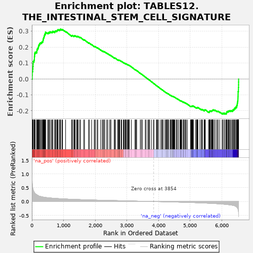

| | | Dataset | al10_v_al2 |
| Phenotype | NoPhenotypeAvailable |
| Upregulated in class | na_pos |
| GeneSet | TABLES12.THE_INTESTINAL_STEM_CELL_SIGNATURE |
| Enrichment Score (ES) | 0.31351745 |
| Normalized Enrichment Score (NES) | 1.1591407 |
| Nominal p-value | 0.15120968 |
| FDR q-value | 0.25049734 |
| FWER p-Value | 0.99 |
Table: GSEA Results Summary

Fig 1: Enrichment plot: TABLES12.THE_INTESTINAL_STEM_CELL_SIGNATURE
Profile of the Running ES Score & Positions of GeneSet Members on the Rank Ordered List
| PROBE | GENE SYMBOL | GENE_TITLE | RANK IN GENE LIST | RANK METRIC SCORE | RUNNING ES | CORE ENRICHMENT | | 1 | Cenpf | | | 11 | 0.715 | 0.0235 | Yes |
| 2 | Esco2 | | | 13 | 0.651 | 0.0464 | Yes |
| 3 | Stmn1 | | | 26 | 0.518 | 0.0628 | Yes |
| 4 | Hirip3 | | | 33 | 0.490 | 0.0792 | Yes |
| 5 | Incenp | | | 38 | 0.457 | 0.0947 | Yes |
| 6 | Nusap1 | | | 40 | 0.449 | 0.1105 | Yes |
| 7 | Ccnb1 | | | 68 | 0.345 | 0.1184 | Yes |
| 8 | Hells | | | 79 | 0.333 | 0.1286 | Yes |
| 9 | Cep192 | | | 80 | 0.331 | 0.1403 | Yes |
| 10 | Brd8 | | | 86 | 0.318 | 0.1507 | Yes |
| 11 | Aspm | | | 89 | 0.310 | 0.1614 | Yes |
| 12 | Ckap2 | | | 107 | 0.287 | 0.1688 | Yes |
| 13 | Pole | | | 150 | 0.252 | 0.1710 | Yes |
| 14 | Ttk | | | 159 | 0.242 | 0.1783 | Yes |
| 15 | Tia1 | | | 162 | 0.240 | 0.1864 | Yes |
| 16 | Dtl | | | 183 | 0.225 | 0.1912 | Yes |
| 17 | Brca2 | | | 196 | 0.221 | 0.1971 | Yes |
| 18 | Nup210 | | | 207 | 0.210 | 0.2029 | Yes |
| 19 | Pou2f1 | | | 215 | 0.208 | 0.2092 | Yes |
| 20 | Bcl11a | | | 224 | 0.199 | 0.2149 | Yes |
| 21 | Nap1l1 | | | 242 | 0.193 | 0.2190 | Yes |
| 22 | Nhp2 | | | 253 | 0.190 | 0.2242 | Yes |
| 23 | Pck2 | | | 277 | 0.183 | 0.2270 | Yes |
| 24 | Palb2 | | | 306 | 0.176 | 0.2287 | Yes |
| 25 | Cdca5 | | | 319 | 0.172 | 0.2329 | Yes |
| 26 | Rad50 | | | 342 | 0.165 | 0.2352 | Yes |
| 27 | Atr | | | 351 | 0.163 | 0.2397 | Yes |
| 28 | Trim37 | | | 354 | 0.163 | 0.2451 | Yes |
| 29 | Mcm5 | | | 362 | 0.161 | 0.2497 | Yes |
| 30 | Psip1 | | | 365 | 0.160 | 0.2550 | Yes |
| 31 | Ccdc18 | | | 374 | 0.158 | 0.2593 | Yes |
| 32 | Cbx6 | | | 385 | 0.155 | 0.2632 | Yes |
| 33 | Txndc16 | | | 388 | 0.155 | 0.2684 | Yes |
| 34 | Psrc1 | | | 395 | 0.154 | 0.2729 | Yes |
| 35 | Haus4 | | | 405 | 0.152 | 0.2768 | Yes |
| 36 | Trim28 | | | 408 | 0.152 | 0.2819 | Yes |
| 37 | Chek2 | | | 428 | 0.148 | 0.2841 | Yes |
| 38 | Picalm | | | 429 | 0.148 | 0.2893 | Yes |
| 39 | Pola2 | | | 432 | 0.147 | 0.2942 | Yes |
| 40 | Phgdh | | | 497 | 0.139 | 0.2889 | Yes |
| 41 | AU020206 | | | 526 | 0.136 | 0.2892 | Yes |
| 42 | Tiam1 | | | 535 | 0.135 | 0.2927 | Yes |
| 43 | Immp2l | | | 564 | 0.132 | 0.2929 | Yes |
| 44 | Plce1 | | | 572 | 0.131 | 0.2964 | Yes |
| 45 | Mcm7 | | | 614 | 0.126 | 0.2943 | Yes |
| 46 | Uhrf2 | | | 641 | 0.124 | 0.2945 | Yes |
| 47 | Eri1 | | | 660 | 0.122 | 0.2960 | Yes |
| 48 | Isyna1 | | | 663 | 0.122 | 0.3000 | Yes |
| 49 | Kif20a | | | 722 | 0.117 | 0.2948 | Yes |
| 50 | Clic4 | | | 727 | 0.117 | 0.2983 | Yes |
| 51 | Wee1 | | | 737 | 0.116 | 0.3010 | Yes |
| 52 | Nfic | | | 755 | 0.114 | 0.3023 | Yes |
| 53 | Hmgb3 | | | 788 | 0.111 | 0.3011 | Yes |
| 54 | Atrx | | | 796 | 0.110 | 0.3039 | Yes |
| 55 | Nrm | | | 806 | 0.110 | 0.3063 | Yes |
| 56 | Mlxip | | | 822 | 0.108 | 0.3078 | Yes |
| 57 | Irf2bp2 | | | 829 | 0.108 | 0.3106 | Yes |
| 58 | Dnajc9 | | | 877 | 0.104 | 0.3068 | Yes |
| 59 | Zmym1 | | | 882 | 0.104 | 0.3098 | Yes |
| 60 | Ilf3 | | | 905 | 0.102 | 0.3099 | Yes |
| 61 | Arsb | | | 906 | 0.102 | 0.3135 | Yes |
| 62 | Tbc1d4 | | | 952 | 0.099 | 0.3098 | No |
| 63 | Chek1 | | | 968 | 0.098 | 0.3109 | No |
| 64 | Pde3b | | | 1066 | 0.093 | 0.2986 | No |
| 65 | Rrp1b | | | 1261 | 0.083 | 0.2705 | No |
| 66 | Sipa1l1 | | | 1269 | 0.082 | 0.2723 | No |
| 67 | Blnk | | | 1279 | 0.082 | 0.2737 | No |
| 68 | Eri2 | | | 1325 | 0.079 | 0.2693 | No |
| 69 | Wdr90 | | | 1340 | 0.078 | 0.2698 | No |
| 70 | Spice1 | | | 1348 | 0.078 | 0.2715 | No |
| 71 | Alms1 | | | 1367 | 0.077 | 0.2713 | No |
| 72 | Arl4c | | | 1410 | 0.075 | 0.2673 | No |
| 73 | Cdo1 | | | 1435 | 0.075 | 0.2661 | No |
| 74 | Rpa2 | | | 1442 | 0.074 | 0.2677 | No |
| 75 | Hunk | | | 1464 | 0.073 | 0.2670 | No |
| 76 | Dach1 | | | 1514 | 0.071 | 0.2616 | No |
| 77 | Fads1 | | | 1536 | 0.070 | 0.2607 | No |
| 78 | Psd3 | | | 1642 | 0.066 | 0.2463 | No |
| 79 | Aqp4 | | | 1665 | 0.065 | 0.2450 | No |
| 80 | Mcc | | | 1796 | 0.061 | 0.2264 | No |
| 81 | Macrod1 | | | 1812 | 0.060 | 0.2261 | No |
| 82 | Dtx4 | | | 1889 | 0.057 | 0.2159 | No |
| 83 | Chchd6 | | | 1970 | 0.054 | 0.2051 | No |
| 84 | Slc25a4 | | | 2000 | 0.053 | 0.2023 | No |
| 85 | Bcl7a | | | 2004 | 0.053 | 0.2037 | No |
| 86 | Mcm3 | | | 2061 | 0.051 | 0.1966 | No |
| 87 | Phlpp1 | | | 2084 | 0.051 | 0.1949 | No |
| 88 | Nmral1 | | | 2174 | 0.048 | 0.1823 | No |
| 89 | Mcm4 | | | 2224 | 0.047 | 0.1761 | No |
| 90 | Zfp629 | | | 2256 | 0.046 | 0.1728 | No |
| 91 | Mcm2 | | | 2259 | 0.046 | 0.1741 | No |
| 92 | Nfib | | | 2294 | 0.045 | 0.1702 | No |
| 93 | Dapk2 | | | 2302 | 0.045 | 0.1707 | No |
| 94 | Nfia | | | 2365 | 0.043 | 0.1623 | No |
| 95 | Zfp280d | | | 2393 | 0.042 | 0.1594 | No |
| 96 | Rbm38 | | | 2449 | 0.041 | 0.1521 | No |
| 97 | Surf2 | | | 2486 | 0.040 | 0.1477 | No |
| 98 | Fam60a | | | 2498 | 0.039 | 0.1473 | No |
| 99 | Kank1 | | | 2607 | 0.036 | 0.1313 | No |
| 100 | Vgll4 | | | 2608 | 0.036 | 0.1326 | No |
| 101 | Sesn3 | | | 2620 | 0.036 | 0.1321 | No |
| 102 | Zfp512 | | | 2645 | 0.035 | 0.1295 | No |
| 103 | Gins4 | | | 2711 | 0.033 | 0.1202 | No |
| 104 | Sntb2 | | | 2719 | 0.033 | 0.1203 | No |
| 105 | Hmbox1 | | | 2744 | 0.032 | 0.1176 | No |
| 106 | Mpzl1 | | | 2752 | 0.032 | 0.1176 | No |
| 107 | Isg20l2 | | | 2759 | 0.032 | 0.1178 | No |
| 108 | Mdn1 | | | 2768 | 0.031 | 0.1176 | No |
| 109 | Kcnq1 | | | 2781 | 0.031 | 0.1167 | No |
| 110 | Zfp451 | | | 2822 | 0.030 | 0.1114 | No |
| 111 | Nrtn | | | 2840 | 0.029 | 0.1097 | No |
| 112 | Pds5b | | | 2891 | 0.028 | 0.1027 | No |
| 113 | Foxp4 | | | 2903 | 0.027 | 0.1019 | No |
| 114 | Noxa1 | | | 2926 | 0.027 | 0.0993 | No |
| 115 | Dock11 | | | 2952 | 0.026 | 0.0962 | No |
| 116 | Poglut1 | | | 2965 | 0.026 | 0.0952 | No |
| 117 | Sema3b | | | 2968 | 0.026 | 0.0958 | No |
| 118 | Slc27a1 | | | 2973 | 0.025 | 0.0961 | No |
| 119 | Mga | | | 3004 | 0.024 | 0.0921 | No |
| 120 | Zfp318 | | | 3025 | 0.024 | 0.0898 | No |
| 121 | Cnn3 | | | 3043 | 0.023 | 0.0879 | No |
| 122 | Lzts2 | | | 3047 | 0.023 | 0.0882 | No |
| 123 | Farp1 | | | 3068 | 0.022 | 0.0858 | No |
| 124 | Glrx | | | 3077 | 0.022 | 0.0853 | No |
| 125 | Stk39 | | | 3081 | 0.022 | 0.0856 | No |
| 126 | Ncor2 | | | 3143 | 0.021 | 0.0766 | No |
| 127 | Ivd | | | 3261 | 0.017 | 0.0584 | No |
| 128 | Cdk4 | | | 3274 | 0.017 | 0.0571 | No |
| 129 | Rassf4 | | | 3277 | 0.016 | 0.0574 | No |
| 130 | Fto | | | 3306 | 0.016 | 0.0534 | No |
| 131 | Ppp1r9a | | | 3311 | 0.015 | 0.0533 | No |
| 132 | Smad5 | | | 3426 | 0.012 | 0.0355 | No |
| 133 | Rtn4 | | | 3461 | 0.011 | 0.0305 | No |
| 134 | Napepld | | | 3462 | 0.011 | 0.0309 | No |
| 135 | Ces1d | | | 3497 | 0.011 | 0.0258 | No |
| 136 | Zmym4 | | | 3583 | 0.008 | 0.0125 | No |
| 137 | Mcm6 | | | 3609 | 0.007 | 0.0087 | No |
| 138 | Wdr55 | | | 3664 | 0.006 | 0.0003 | No |
| 139 | Atm | | | 3694 | 0.005 | -0.0042 | No |
| 140 | Tubb2b | | | 3700 | 0.005 | -0.0048 | No |
| 141 | Hmgn1 | | | 3729 | 0.004 | -0.0091 | No |
| 142 | Notch1 | | | 3787 | 0.002 | -0.0182 | No |
| 143 | Nr2e3 | | | 3848 | 0.000 | -0.0278 | No |
| 144 | Mycbp2 | | | 3858 | -0.000 | -0.0292 | No |
| 145 | Slc14a1 | | | 3935 | -0.002 | -0.0413 | No |
| 146 | Zfp292 | | | 3947 | -0.002 | -0.0430 | No |
| 147 | Sorbs2 | | | 3967 | -0.003 | -0.0459 | No |
| 148 | Dtd1 | | | 3982 | -0.003 | -0.0480 | No |
| 149 | Fhl2 | | | 3999 | -0.004 | -0.0505 | No |
| 150 | Fzd7 | | | 4060 | -0.006 | -0.0599 | No |
| 151 | Mbp | | | 4103 | -0.007 | -0.0663 | No |
| 152 | Limk2 | | | 4116 | -0.007 | -0.0680 | No |
| 153 | Prrc2b | | | 4122 | -0.007 | -0.0685 | No |
| 154 | Rnf43 | | | 4152 | -0.009 | -0.0729 | No |
| 155 | Insr | | | 4205 | -0.010 | -0.0808 | No |
| 156 | Gkap1 | | | 4236 | -0.011 | -0.0853 | No |
| 157 | Slc19a2 | | | 4253 | -0.012 | -0.0874 | No |
| 158 | Ppat | | | 4260 | -0.012 | -0.0880 | No |
| 159 | Lancl1 | | | 4269 | -0.012 | -0.0888 | No |
| 160 | Csnk1e | | | 4295 | -0.013 | -0.0924 | No |
| 161 | Apex1 | | | 4298 | -0.013 | -0.0922 | No |
| 162 | Cttnbp2 | | | 4302 | -0.013 | -0.0922 | No |
| 163 | Arhgap39 | | | 4322 | -0.014 | -0.0948 | No |
| 164 | Mecom | | | 4367 | -0.015 | -0.1013 | No |
| 165 | Pdxk | | | 4389 | -0.016 | -0.1041 | No |
| 166 | Acvr2b | | | 4395 | -0.016 | -0.1043 | No |
| 167 | Acss2 | | | 4398 | -0.016 | -0.1041 | No |
| 168 | Gtf2i | | | 4411 | -0.017 | -0.1054 | No |
| 169 | Tns3 | | | 4445 | -0.018 | -0.1101 | No |
| 170 | Sorcs2 | | | 4446 | -0.018 | -0.1094 | No |
| 171 | Wwp1 | | | 4447 | -0.018 | -0.1088 | No |
| 172 | Urod | | | 4451 | -0.018 | -0.1087 | No |
| 173 | Tnfrsf19 | | | 4466 | -0.018 | -0.1103 | No |
| 174 | Zfp422 | | | 4471 | -0.018 | -0.1102 | No |
| 175 | Bcl2 | | | 4487 | -0.019 | -0.1120 | No |
| 176 | Zfp740 | | | 4503 | -0.019 | -0.1137 | No |
| 177 | Paics | | | 4518 | -0.020 | -0.1152 | No |
| 178 | Fam92a | | | 4562 | -0.021 | -0.1214 | No |
| 179 | Enpp1 | | | 4572 | -0.022 | -0.1221 | No |
| 180 | Pbx1 | | | 4575 | -0.022 | -0.1216 | No |
| 181 | Ascl2 | | | 4620 | -0.023 | -0.1278 | No |
| 182 | Evl | | | 4624 | -0.023 | -0.1275 | No |
| 183 | Mpzl3 | | | 4679 | -0.025 | -0.1353 | No |
| 184 | Hmga2 | | | 4699 | -0.025 | -0.1374 | No |
| 185 | Mecp2 | | | 4711 | -0.026 | -0.1383 | No |
| 186 | Tifa | | | 4716 | -0.026 | -0.1380 | No |
| 187 | Slco3a1 | | | 4727 | -0.027 | -0.1387 | No |
| 188 | Mfge8 | | | 4752 | -0.027 | -0.1415 | No |
| 189 | Trim24 | | | 4792 | -0.029 | -0.1467 | No |
| 190 | Phf20 | | | 4797 | -0.029 | -0.1463 | No |
| 191 | Tle3 | | | 4798 | -0.029 | -0.1453 | No |
| 192 | Maged1 | | | 4814 | -0.030 | -0.1467 | No |
| 193 | Engase | | | 4848 | -0.031 | -0.1508 | No |
| 194 | Sema7a | | | 4861 | -0.031 | -0.1517 | No |
| 195 | Dkc1 | | | 4878 | -0.032 | -0.1531 | No |
| 196 | Il17rd | | | 4915 | -0.033 | -0.1577 | No |
| 197 | Kcne3 | | | 5017 | -0.037 | -0.1725 | No |
| 198 | Etv6 | | | 5021 | -0.037 | -0.1717 | No |
| 199 | Clic6 | | | 5036 | -0.037 | -0.1726 | No |
| 200 | Bcl11b | | | 5043 | -0.038 | -0.1723 | No |
| 201 | Nme4 | | | 5050 | -0.038 | -0.1719 | No |
| 202 | Trim44 | | | 5056 | -0.038 | -0.1713 | No |
| 203 | Polr1a | | | 5061 | -0.039 | -0.1706 | No |
| 204 | Elmo1 | | | 5074 | -0.039 | -0.1711 | No |
| 205 | Snx10 | | | 5078 | -0.039 | -0.1702 | No |
| 206 | Zfp704 | | | 5088 | -0.040 | -0.1703 | No |
| 207 | Hes1 | | | 5094 | -0.040 | -0.1697 | No |
| 208 | Tgif1 | | | 5106 | -0.040 | -0.1700 | No |
| 209 | Mtus1 | | | 5174 | -0.043 | -0.1792 | No |
| 210 | Yap1 | | | 5204 | -0.044 | -0.1823 | No |
| 211 | Pla2g4a | | | 5212 | -0.045 | -0.1818 | No |
| 212 | Sycn | | | 5222 | -0.045 | -0.1817 | No |
| 213 | Myc | | | 5228 | -0.045 | -0.1809 | No |
| 214 | Ung | | | 5231 | -0.045 | -0.1796 | No |
| 215 | Lpar6 | | | 5244 | -0.046 | -0.1799 | No |
| 216 | Lipt2 | | | 5246 | -0.046 | -0.1784 | No |
| 217 | Vdr | | | 5313 | -0.050 | -0.1872 | No |
| 218 | Zfhx3 | | | 5358 | -0.052 | -0.1925 | No |
| 219 | Zmym2 | | | 5366 | -0.052 | -0.1917 | No |
| 220 | Grb7 | | | 5371 | -0.052 | -0.1905 | No |
| 221 | Tns4 | | | 5397 | -0.053 | -0.1927 | No |
| 222 | Gpld1 | | | 5451 | -0.056 | -0.1992 | No |
| 223 | Zfp397 | | | 5452 | -0.056 | -0.1972 | No |
| 224 | Acss1 | | | 5454 | -0.056 | -0.1953 | No |
| 225 | Axin2 | | | 5464 | -0.057 | -0.1948 | No |
| 226 | Nav1 | | | 5474 | -0.057 | -0.1942 | No |
| 227 | Spin1 | | | 5484 | -0.058 | -0.1936 | No |
| 228 | Mkl2 | | | 5583 | -0.062 | -0.2071 | No |
| 229 | Dctd | | | 5607 | -0.064 | -0.2085 | No |
| 230 | Iffo2 | | | 5611 | -0.064 | -0.2067 | No |
| 231 | Efna4 | | | 5617 | -0.064 | -0.2053 | No |
| 232 | Sdsl | | | 5621 | -0.065 | -0.2035 | No |
| 233 | Hk2 | | | 5626 | -0.065 | -0.2018 | No |
| 234 | Cdca7 | | | 5630 | -0.065 | -0.2000 | No |
| 235 | Agr3 | | | 5647 | -0.066 | -0.2002 | No |
| 236 | Lrig1 | | | 5676 | -0.068 | -0.2023 | No |
| 237 | Sfrp5 | | | 5684 | -0.069 | -0.2010 | No |
| 238 | Rgmb | | | 5693 | -0.069 | -0.1998 | No |
| 239 | Msh2 | | | 5702 | -0.070 | -0.1986 | No |
| 240 | Sp5 | | | 5709 | -0.070 | -0.1971 | No |
| 241 | Tnfsf10 | | | 5719 | -0.071 | -0.1960 | No |
| 242 | Ephb2 | | | 5728 | -0.071 | -0.1948 | No |
| 243 | Car12 | | | 5736 | -0.072 | -0.1934 | No |
| 244 | Ppp1r1b | | | 5778 | -0.075 | -0.1973 | No |
| 245 | Scml4 | | | 5787 | -0.075 | -0.1959 | No |
| 246 | Csad | | | 5836 | -0.079 | -0.2008 | No |
| 247 | Zfp553 | | | 5871 | -0.081 | -0.2034 | No |
| 248 | Mif | | | 5887 | -0.082 | -0.2029 | No |
| 249 | Cd44 | | | 5938 | -0.085 | -0.2079 | No |
| 250 | Smo | | | 6011 | -0.092 | -0.2162 | No |
| 251 | Bphl | | | 6038 | -0.094 | -0.2170 | No |
| 252 | Msi1 | | | 6044 | -0.095 | -0.2144 | No |
| 253 | Hmgcs2 | | | 6086 | -0.099 | -0.2175 | No |
| 254 | Utrn | | | 6090 | -0.100 | -0.2144 | No |
| 255 | Cd320 | | | 6127 | -0.104 | -0.2165 | No |
| 256 | Adra2a | | | 6148 | -0.106 | -0.2159 | No |
| 257 | Bckdha | | | 6157 | -0.107 | -0.2134 | No |
| 258 | Shisa2 | | | 6158 | -0.108 | -0.2096 | No |
| 259 | Ehf | | | 6161 | -0.108 | -0.2061 | No |
| 260 | Nrn1 | | | 6174 | -0.110 | -0.2041 | No |
| 261 | Zbtb38 | | | 6208 | -0.115 | -0.2053 | No |
| 262 | Cachd1 | | | 6210 | -0.115 | -0.2014 | No |
| 263 | Cps1 | | | 6232 | -0.119 | -0.2006 | No |
| 264 | Prelp | | | 6252 | -0.121 | -0.1993 | No |
| 265 | Pkig | | | 6284 | -0.125 | -0.1999 | No |
| 266 | Itga1 | | | 6305 | -0.128 | -0.1985 | No |
| 267 | Sox9 | | | 6340 | -0.137 | -0.1992 | No |
| 268 | Slc1a3 | | | 6356 | -0.140 | -0.1966 | No |
| 269 | Arid5b | | | 6362 | -0.141 | -0.1924 | No |
| 270 | Prss23 | | | 6389 | -0.149 | -0.1913 | No |
| 271 | Impdh2 | | | 6401 | -0.152 | -0.1877 | No |
| 272 | Myo1b | | | 6410 | -0.157 | -0.1834 | No |
| 273 | Aqp1 | | | 6437 | -0.172 | -0.1815 | No |
| 274 | Acot1 | | | 6444 | -0.175 | -0.1762 | No |
| 275 | Sox4 | | | 6474 | -0.203 | -0.1737 | No |
| 276 | Lgr5 | | | 6476 | -0.207 | -0.1665 | No |
| 277 | Ifitm2 | | | 6491 | -0.220 | -0.1610 | No |
| 278 | Klhl24 | | | 6494 | -0.229 | -0.1532 | No |
| 279 | Smoc2 | | | 6501 | -0.242 | -0.1456 | No |
| 280 | App | | | 6507 | -0.252 | -0.1374 | No |
| 281 | Cdk6 | | | 6513 | -0.273 | -0.1286 | No |
| 282 | Ifitm3 | | | 6515 | -0.275 | -0.1190 | No |
| 283 | H2-Eb1 | | | 6517 | -0.280 | -0.1093 | No |
| 284 | Soat1 | | | 6519 | -0.285 | -0.0993 | No |
| 285 | Prom1 | | | 6520 | -0.290 | -0.0891 | No |
| 286 | Gas6 | | | 6521 | -0.295 | -0.0786 | No |
| 287 | Gkn3 | | | 6530 | -0.368 | -0.0669 | No |
| 288 | Fam13a | | | 6531 | -0.369 | -0.0538 | No |
| 289 | Olfm4 | | | 6534 | -0.484 | -0.0370 | No |
| 290 | Slc12a2 | | | 6535 | -0.494 | -0.0195 | No |
| 291 | Pdgfa | | | 6536 | -0.552 | -0.0000 | No |
Table: GSEA details [plain text format]
Fig 2: TABLES12.THE_INTESTINAL_STEM_CELL_SIGNATURE: Random ES distribution
Gene set null distribution of ES for TABLES12.THE_INTESTINAL_STEM_CELL_SIGNATURE